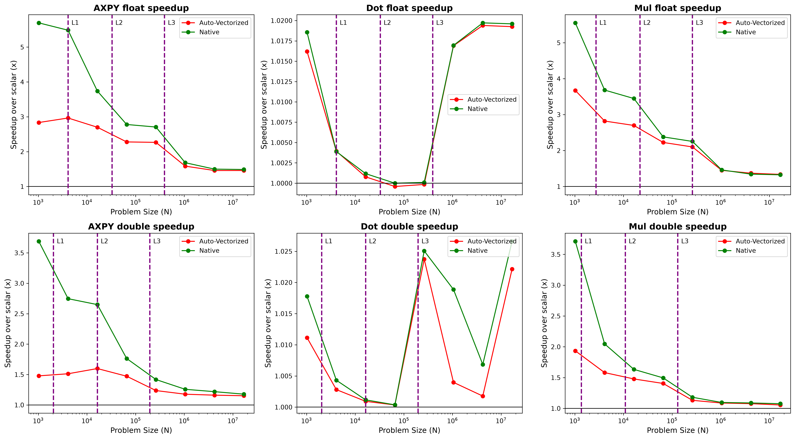
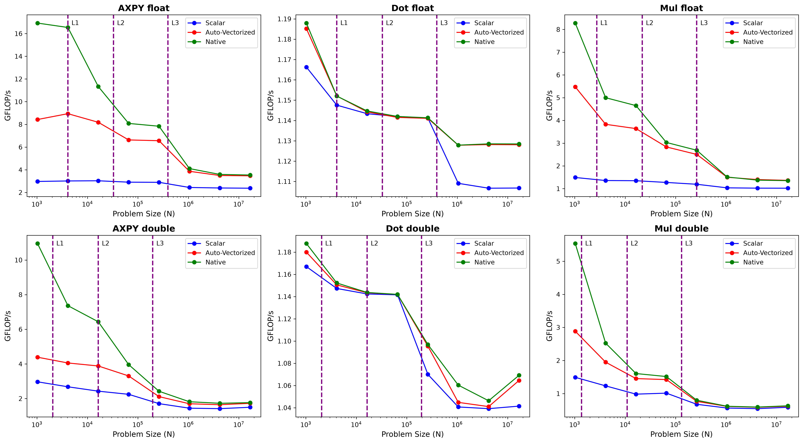
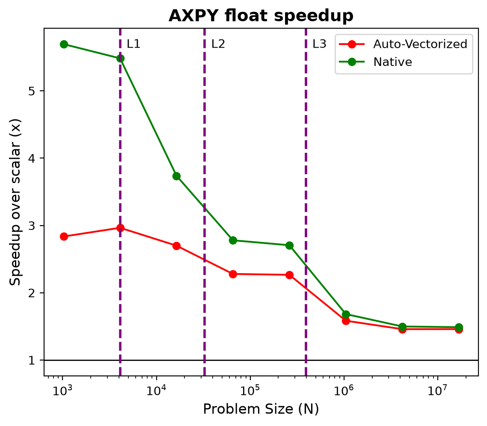
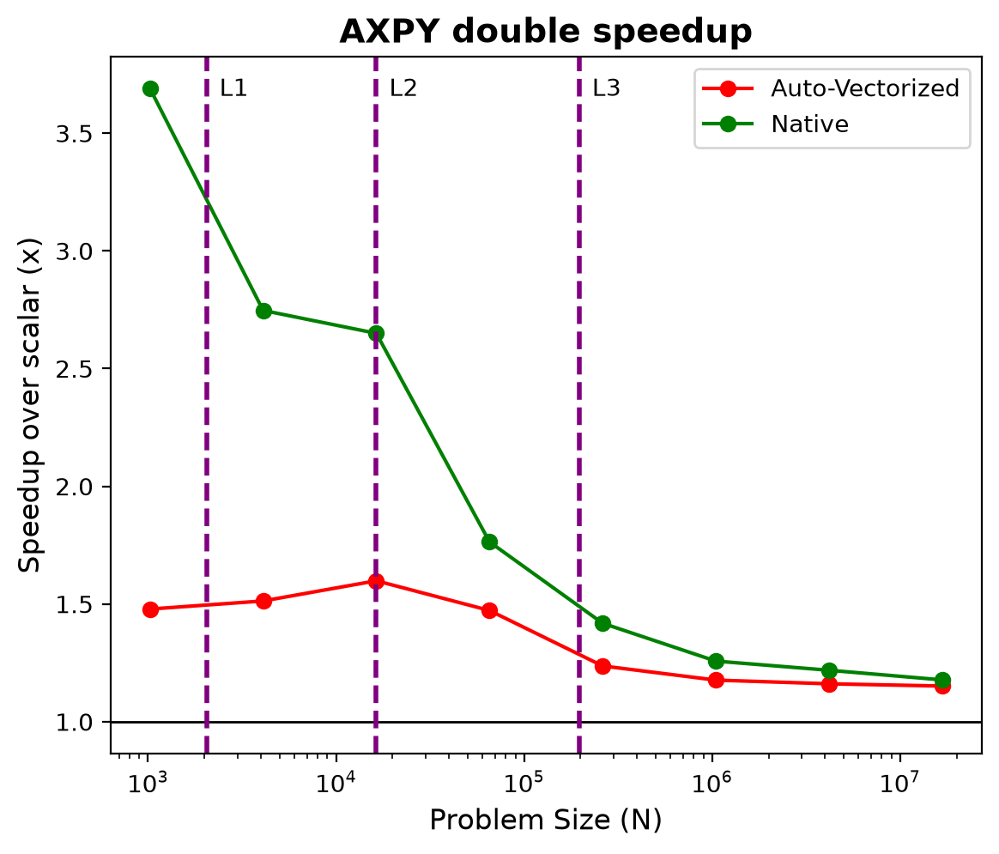
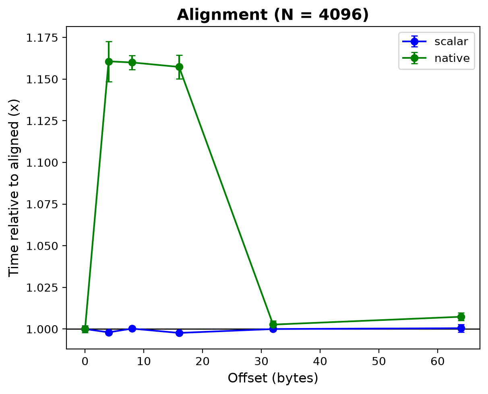
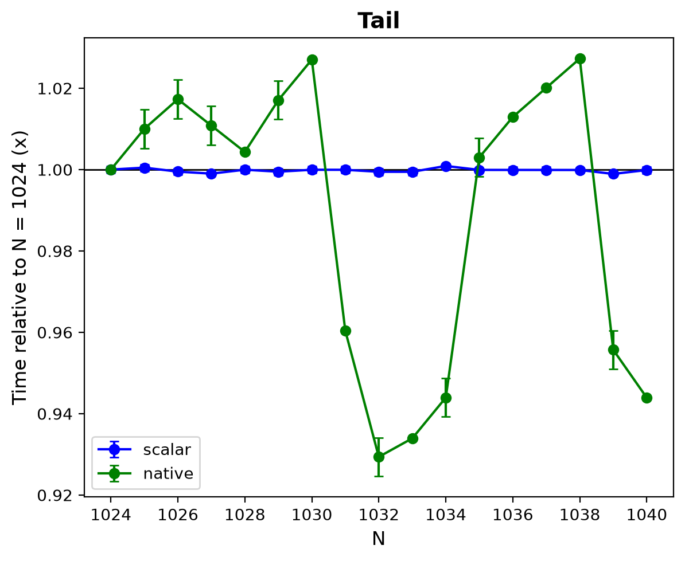
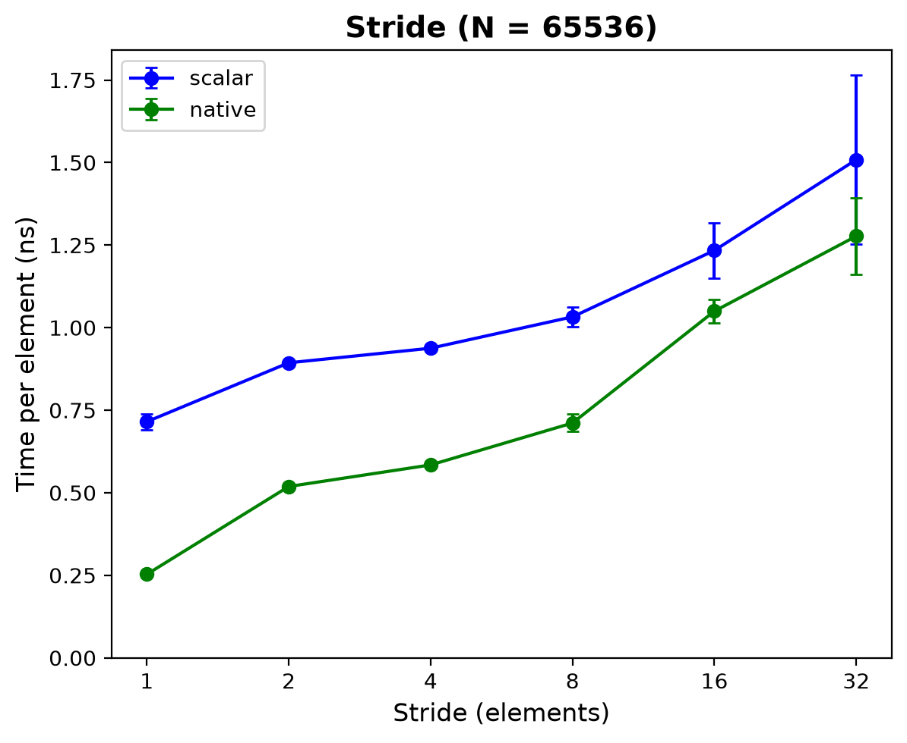
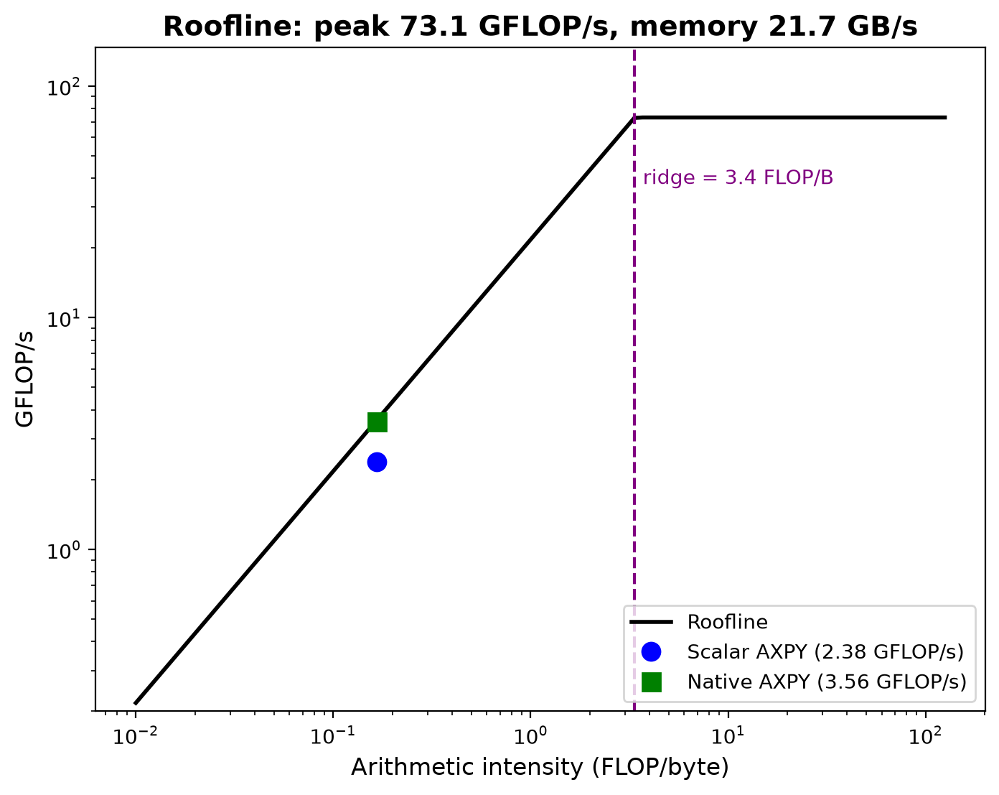
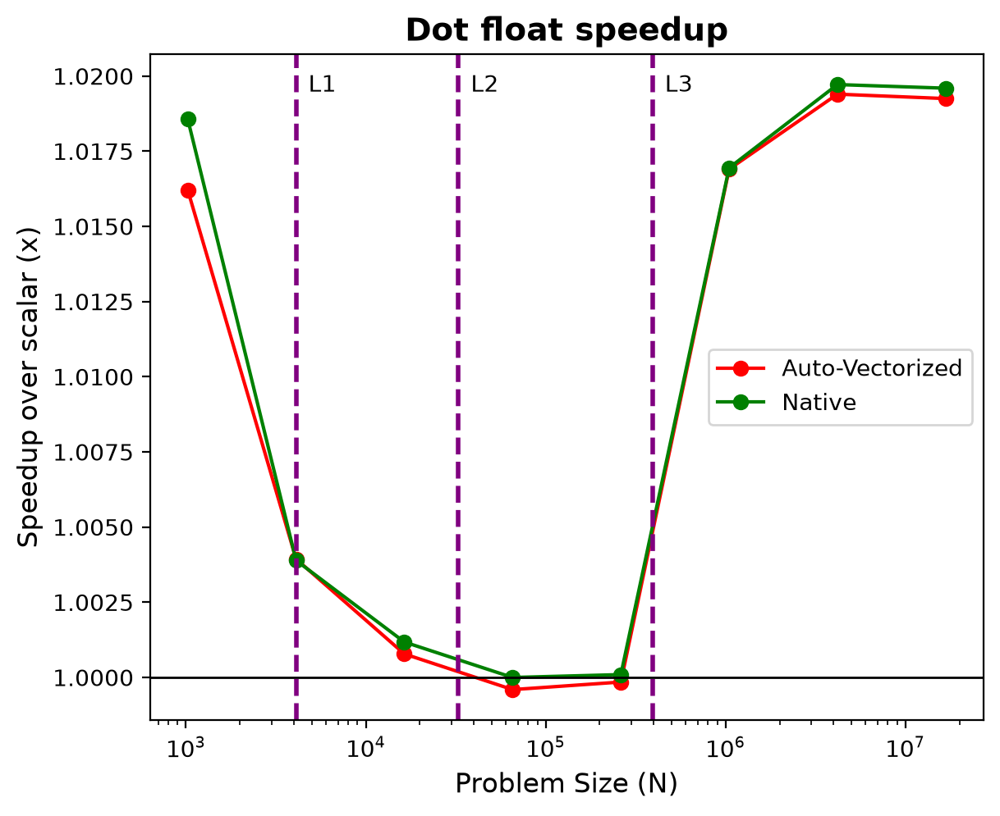

Project 1: SIMD Advantage Profiling
ECSE 4320/6320 Advanced Computer Systems · Intel Core i3-6100U · gcc 14.2
1. Setup and methodology
15 pts · Baseline, correctness, reproducibility| CPU | Intel Core i3-6100U @ 2.3 GHz (Skylake, no turbo), 2 cores / 4 threads, AVX2 + FMA, no AVX-512 |
|---|---|
| Caches (per core) | L1d 32 KiB, L2 256 KiB, L3 3 MiB (unified), from /sys/devices/system/cpu/cpu0/cache/ |
| OS / compiler | Ubuntu, Linux 6.11.0-29-generic; gcc 14.2.0 |
| Frequency / SMT | Governor powersave; SMT on |
| Builds | scalar: -O3 -fno-tree-vectorizeauto: -O3 (SSE, 128-bit)native: -O3 -march=native (AVX2/FMA, 256-bit) |
| Timing | clock() around trials calls, trials = 2×10⁸ / n + 5; 3 reps (mean ± std); pinned to core 2 with taskset |
| Data | i % 10 + 1; arrays 64-byte aligned (aligned_alloc) |
| Kernels | AXPY y = a*x + y, dot s += x*y, elementwise multiply z = x*y; float32 and float64 |
2. Hypothesis
- Native vectorization will usually perform better than auto vectorization, because it parallelizes more aggressively and performs more operations at once
- Native and auto vectorization will always perform better than no vectorization, for the same reason: they perform more operations at once
- As the number of elements increases, the performance gain will go down, because memory limits the speedup
- Unalignment → worse performance in all cases, because it makes the vectorization inefficient, and then similar memory limits apply
- The effect should be the same for both float32 and float64, because the general trend should be the same; float64 may be slower overall since each element is bigger
3. Correctness
15 pts · Baseline, correctness, reproducibilityEvery kernel run at n = 4103 (not a multiple of 8, so the tail code runs) in all three builds; scalar is the reference (correctness.txt).
| Kernel | Scalar | Auto | Native |
|---|---|---|---|
| AXPY float | 15,014,266,064 | identical | identical |
| AXPY double | 15,014,266,064 | identical | identical |
| Dot float | 105,080,995,840 | identical | identical |
| Dot double | 105,081,224,416 | identical | identical |
| Mul float | 105,081,224,416 | identical | identical |
| Mul double | 105,081,224,416 | identical | identical |
The important result is that every kernel gives the same output in the scalar, auto and native builds. The speedups in the rest of this report are therefore pure performance gains, not bought with any loss of accuracy.
The one difference is between dot float and dot double. This could be due to rounding; however, it's peculiar that it didn't happen to any of the other kernels.
4. Vectorization verification
15 pts · Vectorization verificationCompiler report and key instructions (verify.txt):
simd.c:27:23: optimized: loop vectorized using 32 byte vectors (native, AXPY)
simd.c:27:23: optimized: loop vectorized using 16 byte vectors (auto, AXPY)
scalar axpy_32: mulss %xmm1,%xmm0
addss (%rcx,%rdx,1),%xmm0
native axpy_32: vfmadd213ps (%rcx,%rdx,1),%ymm2,%ymm0
native dp_32: vmulps (%rcx,%rdx,1),%ymm1,%ymm1 then vaddss %xmm1,%xmm0,%xmm0 (×8)For scalar AXPY, the compiler uses mulss and addss: the ss versions of the instructions handle one element at a time. When the loop is vectorized, the native build uses the special vector instruction vfmadd213ps instead, which also does the multiply and the add together in one instruction (FMA). It uses ymm0, ymm1 and ymm2, which are 32-byte vector registers, so each instruction works on 8 floats (or 4 doubles) at once. The compiler report confirms 32-byte vectors for native and 16-byte vectors (4 floats) for auto. No masking is used (AVX2 has no mask registers like AVX-512), so the leftover elements at the end of the array are handled by a scalar loop.
5. Scalar vs SIMD across sizes
Required: speedup and achieved throughput for each kernel

- Best case: AXPY float native 5.48× at n = 4K (16.5 GFLOP/s)
- Native beats auto in L1: AXPY float 5.48× vs 2.97×
In most cases my hypothesis is correct: the vectorized builds are faster than scalar, and native is often the fastest. It beats auto (AXPY float in L1: 5.48× vs 2.97×) because it uses 256-bit AVX2 vectors with FMA instead of 128-bit SSE.
Notably, the gap is largest in the L1 regime. When the data fits in L1 it arrives quickly, so the computation is the bottleneck, and doing 8 operations per instruction helps a lot. With bigger and bigger data, the time is spent waiting for the data to arrive, so vectorization can only help so much relative to how much data there is. The exception is the dot product, which gets no speedup at all (section 12).
6. Locality: SIMD gain compresses
20 pts · Locality and memory-bound analysis
- Native speedup: 5.48× (L1) → 2.78× (n = 64K) → 1.49× (n = 16M, DRAM)
- Scalar time per element: 0.66 ns (L1) → 0.84 ns (DRAM)
This is a continuation of section 5. The speedup drops from 5.48× in L1 to 2.78× at n = 64K, and to 1.49× once the arrays are past the L3 line and in DRAM. With this much data, the bottleneck comes from waiting for memory to transfer it all, not from how fast the computation can be done. Both builds spend most of their time waiting, so the extra vector lanes help less and less.
7. Data type: float vs double
Required: data-type comparison
- L1 speedup, float vs double: AXPY 5.48× vs 2.75×; mul 3.68× vs 2.05× (ratio ≈ 2)
- DRAM speedup, float vs double: AXPY 1.49× vs 1.18×
As my hypothesis expected, the trend is the same for both types: the speedup is largest in L1 and drops as n grows. However, the size of the effect is not the same, so that part of my hypothesis was wrong. In L1 the float speedup is about twice the double speedup (AXPY 5.48× vs 2.75×), because a 32-byte vector register holds 8 floats but only 4 doubles, so each instruction does twice as much work for float.
In DRAM the float speedup is still greater (1.49× vs 1.18×). A float is only 32 bits, so for the same number of operations there is half as much data to wait for.
8. Alignment
20 pts · Alignment, tail, stride/gather studies
- Native in L1: +16% at offsets of 4, 8 and 16 B; no penalty at 32 or 64 B. Scalar unaffected.
- Native in DRAM (n = 16M,
align.csv, not plotted): within ±2% at every offset
Offsets that aren't multiples of 32 bytes (4, 8 and 16 B) make native about 16% slower in L1, while offsets of 32 and 64 B have no penalty. With those offsets, some 32-byte vector loads are split across two cache lines, so one vector load needs two memory accesses. Scalar doesn't care, since it isn't using vectors in the first place: it loads one 4-byte element at a time, so there is nothing to split.
In DRAM (n = 16M) the offset makes no difference (within ±2%), because the time spent waiting for memory hides the extra accesses.
9. Tail handling
20 pts · Alignment, tail, stride/gather studies
- Scalar: grows smoothly to 1.016× (just more elements)
- Native: swings between 0.94× and 1.04×, repeating every ~8 elements
With a tail, n isn't a multiple of 8, so the last few elements don't fill a whole vector and can't be vectorized easily. These leftover elements are done one at a time by a scalar loop at the end, which is why the native times move up and down in a pattern that repeats about every 8 elements. The effect is small (within about ±6%) because at n ≈ 1000 there are at most 7 leftover elements against more than 1000 vectorized ones. Scalar again doesn't care: it handles every element the same way, so its time just grows smoothly with n.
10. Stride
20 pts · Alignment, tail, stride/gather studies
- n = 64K: native speedup falls 2.83× (stride 1) → 1.18× (stride ≥ 16)
- n = 16M (DRAM,
stride.csv, not plotted): 1.59× → 1.03× (stride 8) → 0.75× (stride 16): native slower than scalar
Stride means the elements the loop needs aren't next to each other in memory, so the vector load can't be contiguous, and fewer of the numbers in each 64-byte cache line are actually used. For scalar the same is true: its accesses are more spread out, which makes each element take longer.
The vector speedup does not stay the same, though. At n = 64K it falls from 2.83× at stride 1 to 1.18× at stride 16 and above, because native loses its advantage of loading 8 neighbouring floats at once. From stride 16 on, every element sits on its own cache line (16 floats × 4 B = 64 B), so both builds are limited by memory accesses. In DRAM, native even ends up slower than scalar at stride 16 (0.75×).
11. Roofline (AXPY float, n = 16,777,216)
20 pts · Roofline and quantitative insight
| Quantity | Source | Value |
|---|---|---|
| Ppeak | peak.csv: 128,000,000 FLOPs ÷ 0.00175052 s | 73.1 GFLOP/s |
| bs | sweep.csv mul float: 16 × 16,777,216 B ÷ 0.01234875 s | 21.7 GB/s |
| I | AXPY: 2 FLOPs ÷ 12 bytes | 0.167 FLOP/B |
| Ridge point | Ppeak ÷ bs | 3.4 FLOP/B |
| Predicted P | min(73.1, 0.167 × 21.7) | 3.62 GFLOP/s |
| Scalar AXPY | 2 × 16,777,216 ÷ 0.014077688 s | 2.38 GFLOP/s (66%) |
| Native AXPY | 2 × 16,777,216 ÷ 0.009423813 s | 3.56 GFLOP/s (98%) |
- Theoretical peak: 2.3 GHz × 2 FMA units × 8 float lanes × 2 FLOPs = 73.6 GFLOP/s; measured 73.1 (99%)
- Mul moves 16 B per element: read x (4) + read y (4) + write z (4) + write-allocate read of z (4). AXPY moves 12 B because y is read and written in the same line.
AXPY's arithmetic intensity (0.167 FLOP/byte) is far below the ridge point (3.4 FLOP/byte), so AXPY is memory-bound. The native build is already using 98% of the memory roof (3.56 of 3.62 GFLOP/s), so wider SIMD wouldn't help much: the speed is limited by memory bandwidth, not computation. Scalar reaches 66% of the roof.
12. Negative example: dot product
10 pts · AI-use transparency and failure case
simd.c:54:23: optimized: loop vectorized using 32 byte vectors (compiler says: vectorized)
native dp_32: vmulps (%rcx,%rdx,1),%ymm1,%ymm1 (8 multiplies at once)
vaddss %xmm1,%xmm0,%xmm0 (adds: one at a time, ×8)Interestingly, the dot product gets no speedup (about 1.00×) at any n, even though the compiler reports the loop as vectorized. This is misleading: from the compiler report alone you would think the vector version is faster, but it isn't.
The disassembly shows why. The multiplies are vectorized (vmulps, 8 at once), but the additions are still done one at a time (vaddss). Floating-point addition isn't associative, so without -ffast-math gcc has to add the numbers in the original order, and the sum stays a chain of one-by-one additions.
13. Limitations
clock()resolution (handled by repeating many calls); one machine; single core onlypowersavegovernor (no turbo on this CPU, and the measured peak matches 2.3 GHz)- 3 reps per point
14. AI-use note
10 pts · AI-use transparencyAI use for all three projects is described in one shared note: AI_USE_NOTES.md at the top of the repository.